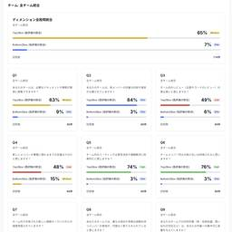

Raccoon Tech Blog [株式会社ラクーンホールディングス 技術戦略部ブログ]
https://techblog.raccoon.ne.jp
株式会社ラクーンホールディングスのエンジニア/デザイナーから技術情報をはじめ、世の中のためになることや社内のことなどを発信してます。
フィード

開発生産性指標に判断基準を作ったら、チームの自律的な改善が始まった話 48
48
Raccoon Tech Blog [株式会社ラクーンホールディングス 技術戦略部ブログ]
こんにちは、齋藤です！ 先日、Web Creators LTというイベントで「メトリクスの勘所」というタイトルで発表させていただきました。 この記事のはそのLTの内容をベースに、もっと内容を詳細に記載したものです。 開発 … "開発生産性指標に判断基準を作ったら、チームの自律的な改善が始まった話" の続きを読む
3日前

Azure AI Searchで挑む200万件の画像検索~PoCから本番化で解決したメモリ・コスト・運用設計の課題~
Raccoon Tech Blog [株式会社ラクーンホールディングス 技術戦略部ブログ]
こんにちは、SuperDeliveryを開発しているエンジニアの齊藤初輝です。 SuperDeliveryは、メーカーと事業者が商品を取引するBtoB（企業間取引）の卸・仕入れができるECサイトです。 今回の記事は、Az … "Azure AI Searchで挑む200万件の画像検索~PoCから本番化で解決したメモリ・コスト・運用設計の課題~" の続きを読む
13日前
もうJSは不要？HTML/CSSだけで実装できるモダンなWeb技術4選
Raccoon Tech Blog [株式会社ラクーンホールディングス 技術戦略部ブログ]
こんにちは。デザイン戦略部のオオイです。 モーダルウィンドウ、アコーディオン、スクロール連動アニメーション...。これまで、これらのUI実装にはJavaScriptが必須でした。しかしHTMLとCSSの進化により、もう頑 … "もうJSは不要？HTML/CSSだけで実装できるモダンなWeb技術4選" の続きを読む
25日前
【Cloudflare】Terraformプロバイダーをv5にアップグレードしました
Raccoon Tech Blog [株式会社ラクーンホールディングス 技術戦略部ブログ]
こんにちは。SREエンジニアのいせです。 弊社ではCloudflareをTerraformで管理しているのですが、先日プロバイダーのバージョンを5系にアップグレードしました。 v5へのアップグレードは思っていた以上に多く … "【Cloudflare】Terraformプロバイダーをv5にアップグレードしました" の続きを読む
1ヶ月前
検索UX改善の取り組み 〜ECサイトSuperDeliveryでの実践〜
Raccoon Tech Blog [株式会社ラクーンホールディングス 技術戦略部ブログ]
目次 はじめに 検索UXのBefore After Before After 実施したUX改善項目の詳細 サジェストUI/視認性の改善 機能拡張と適用範囲の拡大 検索コアロジックの改善 その他UIの改善 今後の展望 エン … "検索UX改善の取り組み 〜ECサイトSuperDeliveryでの実践〜" の続きを読む
1ヶ月前
平面を立体に！2Dイラストをベクターファイルのまま3Dに変更できるターンテーブル機能【Illustrator】
Raccoon Tech Blog [株式会社ラクーンホールディングス 技術戦略部ブログ]
こんにちは、デザイン戦略部のCHAです。 以前、Illustratorで2Dのイラストを3Dに変換する機能が発表されたことがありましたが、回転の精度が不自然だったため、あまり活用されていなかった印象があります。 しかし最 … "平面を立体に！2Dイラストをベクターファイルのまま3Dに変更できるターンテーブル機能【Illustrator】" の続きを読む
2ヶ月前
AIエージェント開発での課題とその処方箋
Raccoon Tech Blog [株式会社ラクーンホールディングス 技術戦略部ブログ]
皆さんこんにちは、CTO室チームリーダーの川崎です。 最近営業やカスタマーサポート部門などSQLを書くことに慣れていない人のために、チャットUI経由でデータベースに問い合わせを行い回答を得ることができるAIエージェントを … "AIエージェント開発での課題とその処方箋" の続きを読む
3ヶ月前
社内タイピング練習サイトを研修中に1日で作った話
Raccoon Tech Blog [株式会社ラクーンホールディングス 技術戦略部ブログ]
「現代の魔法」を使えば、新入社員でも限られた時間でニーズを満たすプロダクトは作れる！ 📚 この記事を読んで得られること 1日で動くプロダクトを作るためには 最小構成で社内ニーズを満たす「MVP」の作り方 研修中でも“実際 … "社内タイピング練習サイトを研修中に1日で作った話" の続きを読む
5ヶ月前
プロダクトオーナー（PO）にこそ「情報セキュリティマネジメント試験」を受けて欲しいと切実に願う理由
Raccoon Tech Blog [株式会社ラクーンホールディングス 技術戦略部ブログ]
情報セキュリティマネジメントの当事者になってしまったTNKです。 最近他社事例ではありますが、アジャイルな開発手法においてセキュリティが軽視されているのではないかと感じるような事象を目にすることがあり、他人事ではないなと … "プロダクトオーナー（PO）にこそ「情報セキュリティマネジメント試験」を受けて欲しいと切実に願う理由" の続きを読む
5ヶ月前
業務フロー図をマスターしよう！システム設計と業務改善の第一歩
Raccoon Tech Blog [株式会社ラクーンホールディングス 技術戦略部ブログ]
こんにちは！開発チームの下田です。 今回は、システム設計や業務改善の現場で非常に重要な「業務フロー図」について解説します。業務フロー図とは何か、なぜ必要なのか、そしてどういう手順で作るのか説明していきます。ひし形や円柱、 … "業務フロー図をマスターしよう！システム設計と業務改善の第一歩" の続きを読む
5ヶ月前